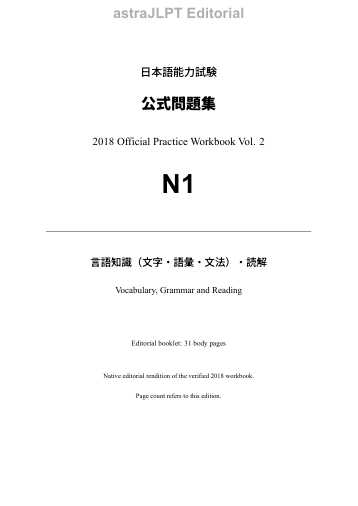
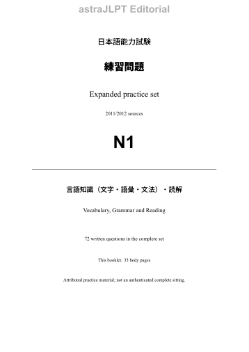
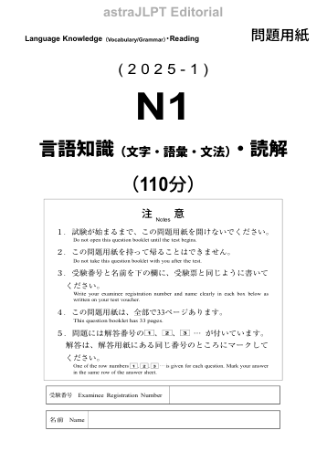
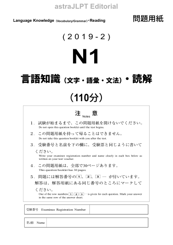
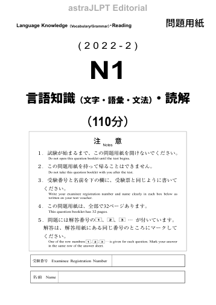
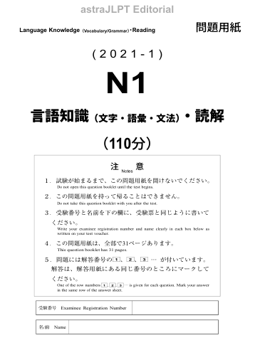
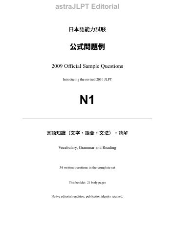

N1
2010–2026 collection
Ordered with higher quality papers presented first.
Principal source PDF available here for good units, also in Github additional-assets/

Written paper
Exam 2011/2012 · Workbook ↗
72 questions · Vocabulary, Grammar, Reading. WARNING: Official Download does not have Q48, 69, 70. You can find the principal source in Github additional-assets/





The older chapters
Written papers from the old test, with separate 1級, 2級, 3級 and 4級 collections. These levels are distinct from modern N1–N5.